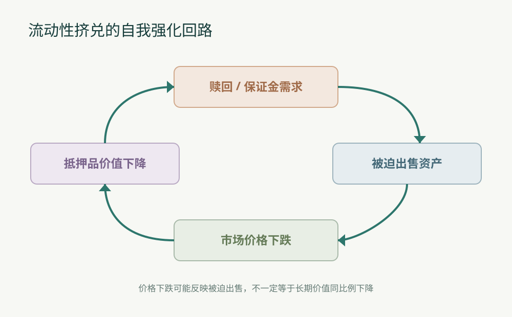

01｜执行摘要：危机不是单一的资产涨跌比赛
金融危机中最危险的误判之一，是把长期抗通胀资产、危机中的流动性资产和短期价格表现当成同一件事。黄金可能有货币信用风险对冲价值，却可能在现金挤兑阶段被卖出；股票可能长期分享经济增长，却会在去杠杆时承受大幅回撤；现金有助于支付负债，但不同现金工具有不同信用、流动性和通胀风险。
- 危机初期常发生流动性冲击。2008年9月15日雷曼申请破产，次日Reserve Primary Fund因持有雷曼商业票据而跌破每份1美元净值。[S1]
- 现金必须进一步定义。银行存款、短期政府债券、政府货币市场基金和持有商业票据的货币市场基金并非同一风险等级。[S1]
- 黄金在2008年确实急跌，但“全场亏得最快”不成立：某一流动性窗口下跌，与2007年6月至2009年6月整个区间上涨约43%可以同时为真。[S3]
- 流动性危机和偿付能力危机可以重叠；现金救助无法自动修复资不抵债。
- 资产配置应从负债和现金流出发，而不是猜测价格底部。
02｜先把三个概念分开
流动性风险
主体可能拥有价值足够的资产，却无法在需要的时间内以合理价格变现，或者无法按时借到现金。期限错配、融资渠道中断、抵押品折价、赎回压力和市场深度不足都可能触发流动性风险。
偿付能力风险
资产可实现价值不足以覆盖负债，或者未来经营现金流不足以偿还债务。这不是暂时借不到钱，而是经济价值和资本结构本身出现问题。
市场价格风险
资产价格变化带来账面或已实现损失。价格下跌可能造成保证金追缴，转化为流动性压力；如果持续削弱净资产，还可能演变成偿付能力危机。
三者会形成反馈回路：价格下跌→保证金追缴→被迫出售→价格进一步下跌→资产负债表受损→融资方收紧信用。
03｜2008年危机：现金挤兑如何传导？
雷曼破产与货币市场基金跌破面值
雷曼兄弟于2008年9月15日申请破产。次日，Reserve Primary Fund公布净资产值跌破每份1美元，原因是其持有雷曼兄弟发行的商业票据。SEC资料记载，该基金持有约7.85亿美元雷曼债务，投资者两天内提出超过400亿美元赎回申请。[S1]
SEC相关资料显示，2008年9月15日当周，投资者从美国优质货币市场基金中撤出约3000亿美元，约占该类基金资产的14%。[S2] 这说明名义上追求稳定净值的现金管理产品，不等同于没有信用风险的现金。
黄金为何在流动性挤兑中下跌？
世界黄金协会提交给巴塞尔委员会的材料记录，2008年第二季度末至11月12日，金价从925.40美元/盎司跌至712.30美元/盎司。该材料将部分下跌与基金赎回和保证金追缴造成的现金需求联系起来。[S3]
但必须同时看更长区间：同一材料记载，2007年6月至2009年6月黄金美元价格上涨约43%，同期标普500下跌约40%、金融股下跌约65%。[S3] 因此“黄金在流动性挤兑窗口下跌”有证据；“黄金整个危机期间表现最差”则与同一来源数据相矛盾。
政策干预不是无成本的
纽约联储对商业票据融资工具的研究记录，雷曼破产后投资者从高收益率优质货币市场基金转向主要持有国债的基金，商业票据发行人难以滚动短期负债。[S4] 流动性支持可以缓解挤兑，但也可能把风险转移到公共资产负债表。

04｜危机阶段模型：流动性压力与偿付能力损失
| 阶段 | 主要机制 | 市场表现 | 核心问题 |
|---|---|---|---|
| 0. 杠杆累积 | 期限错配、抵押品依赖、估值过高 | 风险资产上涨、融资成本低 | 谁在借钱，靠什么还？ |
| 1. 流动性挤兑 | 保证金、赎回、融资渠道冻结 | 多种资产同步出售 | 谁必须今天拿到现金？ |
| 2. 偿付能力重估 | 违约、核销、利润下滑、资本不足 | 股票和信用资产继续承压 | 资产最终值是否覆盖负债？ |
| 3. 政策与修复 | 流动性支持、资本重组、收入恢复 | 按利率、信用和增长重新定价 | 损失由谁承担？现金流何时恢复？ |
这是帮助分析的四阶段框架，不是所有危机必然遵循的时间表。各阶段可能重叠，顺序也会因制度和政策不同而变化。
05｜不同资产在危机中的角色
| 资产 | 流动性挤兑期 | 偿付能力重估期 | 主要风险 |
|---|---|---|---|
| 现金/银行存款 | 用于支付、避免被迫出售 | 维持生活和经营周转 | 通胀、币种、银行和保险边界 |
| 短期高信用政府债 | 可能成为避险资产 | 受利率、财政信用和期限影响 | 久期、主权信用、汇率 |
| 黄金 | 可能被卖出换现金 | 可能对冲货币信用和政策风险 | 无利息、波动、价差和保管 |
| 股票 | 去杠杆时常承受大回撤 | 盈利和资本结构决定恢复 | 经营、估值、融资和稀释 |
| 企业信用债 | 信用利差扩大、流动性折价 | 违约与回收率成为关键 | 发行人信用、行业周期 |
| 房地产 | 成交减少、变现慢 | 就业和租金现金流决定价值 | 杠杆、交易成本、区域差异 |
表格描述常见机制，不是每次危机必然出现的价格顺序。主权债券也可能因通胀或财政风险下跌；黄金也可能因美元走强、实际利率上升或去杠杆而下跌。
06｜中国家庭的“现金”到底是什么？
中国《存款保险条例》第五条规定，存款保险最高偿付限额为人民币50万元。同一存款人在同一家投保机构所有被保险存款账户的本金和利息合并计算，限额以内全额偿付；超出部分依法从投保机构清算财产中受偿。[S5]
家庭现金管理要区分银行存款、货币基金、银行理财、现金和短期政府债券。它们的法律性质、底层资产、净值波动、赎回安排和风险承担者不同。不能把所有现金管理产品统称为没有风险的现金。
07｜用资产负债表做准备，而不是猜价格底部
- 列出未来3—12个月不可推迟的支出，包括生活费、房贷、租金、医疗、学费、工资和税款。
- 列出债务到期时间，重点看浮动利率、短期续贷、抵押贷款和保证金负债。
- 计算可立即动用的流动性，不把审批、赎回等待期或交易深度不足的资产当作现金。
- 识别交易对手风险，区分银行存款、基金、券商、保险和企业债权。
- 检查资产变现时间，房地产、未上市股权和长期项目不适合承担短期支付义务。
- 降低被迫出售概率，优先匹配资产期限、流动性和负债期限。
这不是固定比例的资产配置方案。不同家庭的收入稳定性、负债、币种和未来支出差异很大。
08｜反证与常见误读
- 黄金一定涨？反证：2008年9—11月金价在流动性挤兑期间下跌。[S3]
- 现金永远没有风险？反证：持有商业票据的货币市场基金曾跌破面值并引发赎回潮。[S1]
- 央行放水就能恢复？反证：流动性支持不能自动修复资不抵债、坏账和长期盈利能力不足。
- 股票跌得最多就一定反弹最快？反证：恢复取决于企业生存能力、资本结构、行业需求、估值和政策环境。
09｜结论
金融危机的关键不是简单选择现金、黄金或股票，而是区分资产在不同风险阶段承担的功能。流动性挤兑时，重点是避免被迫出售资产并按时支付负债；偿付能力重估时，重点是判断资产最终价值、企业盈利和债务可持续性；修复阶段，不同资产再按实际利率、信用风险、盈利增长和通胀预期重新定价。
2008年黄金短期下跌并不能证明黄金没有避险价值；黄金在较长区间上涨也不能证明危机初期买入一定安全。可靠的风险管理，是让资产期限、流动性和风险承担能力与负债和未来支出相匹配。
相关研究
- 投机性资产：稀缺、认证、流动性与预期：资产价格与流动性机制。
- 真实经济活动：多指标交叉验证：宏观指标和实体经济变化。
- 商业常识：算账、机会成本与生存约束：现金流与负债期限匹配。
参考来源
- U.S. SEC, SEC Charges Operators of Reserve Primary Fund With Fraud, 2009-05-05. 原文
- U.S. SEC, Testimony on Perspectives on Money Market Mutual Fund Reforms, 2012-06-21. 原文
- World Gold Council, Response to Basel Committee on Banking Supervision, 2012. 监管提交文件
- Federal Reserve Bank of New York, The Federal Reserve's Commercial Paper Funding Facility, Staff Report 423, 2010. 研究
- 国务院，《存款保险条例》，2015-02-17公布。国家行政法规库
- Federal Reserve Economic Data, 3-Month Treasury Bill Secondary Market Rate. 数据序列